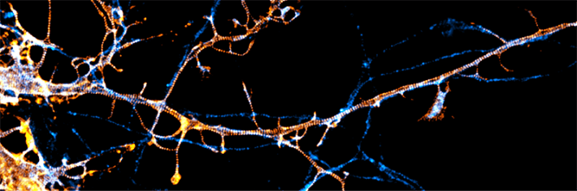
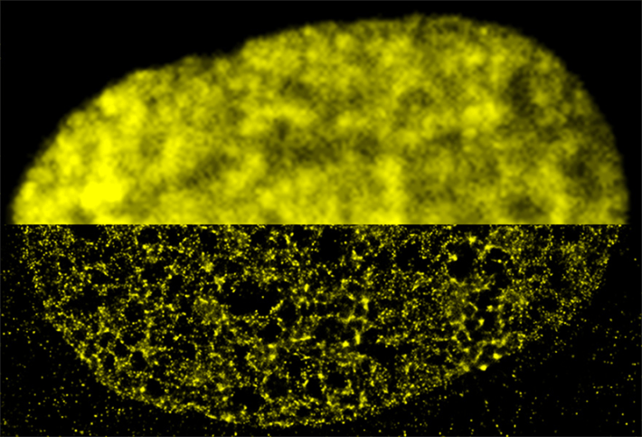
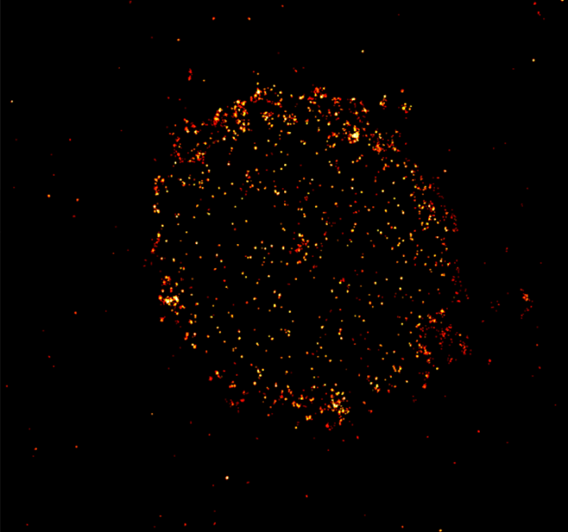
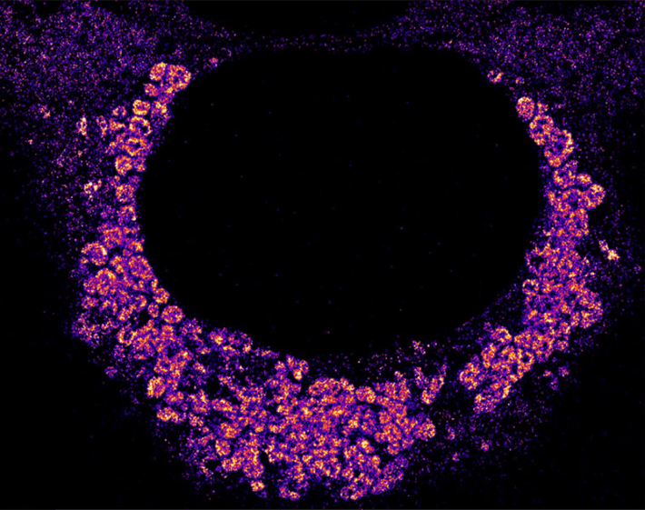

This articleoriginally appeared in Knowable Magazine.
Using a tiny, spherical glass lens sandwiched between two brass plates, the 17th-century Dutch microscopist Antonie van Leeuwenhoek was the first to officially describe red blood cells and sperm cells in human tissues, and observe “animalcules”—bacteria and protists—in the water of a lake.
Increasingly powerful light microscopes followed, revealing cell organelles like the nucleus and energy-producing mitochondria. But by 1873, scientists realized there was a limit to the level of detail these instruments could reveal. When light passes through a lens, the light gets spread out through diffraction. This means that two objects can’t be distinguished if they’re less than roughly 250 nanometers (250 billionths of a meter) apart—instead, they’ll appear as a blur. That put the inner workings of cell structures off limits.
Electron microscopy, which uses electron beams instead of light, offers higher resolution. But the resulting black-and-white images make it hard tell proteins apart, and the method only works on dead cells.
Now, however, optics engineers and physicists have developed sophisticated tricks to overcome the diffraction limit of light microscopes, opening up a new world of detail. These “super-resolution” light microscopy techniques can distinguish objects down to 100 nanometers and sometimes even less than 10 nanometers. Scientists attach tiny, colored fluorescent tags to individual proteins or bits of DNA, often in living cells where they can watch them in action. As a result, they are now filling in key knowledge gaps about how cells work and what goes wrong in neurological diseases and cancers, or during viral infections.
“We can really see new biology—things that we were hoping to see but hadn’t seen before,” says molecular cell biologist Lothar Schermelleh, who directs an imaging center at the University of Oxford in the United Kingdom. Here’s some of what scientists are learning in this new age of light microscopy.
Overcoming the diffraction limit
Super-resolution microscopy uses a variety of techniques to detect detail that would normally be hidden by the diffraction limit, Schermelleh explains. Single-molecule localization microscopy, for instance, takes advantage of the fact that spots on an image are easier to localize with precision when they appear in isolation rather than clustered together. Scientists label the molecules of interest with fluorescent tags designed to spontaneously emit light. As the probes twinkle on and off, computational models estimate exactly where each molecule is located—and reconstruct a high-resolution image of the sample.
Another technique, stimulated emission depletion, scans the samples with lasers that are surrounded by a second, donut-shaped ring of lasers that cancel out the fluorescent light around the area of interest, sharpening the microscope’s resolution. A third method, called structured illumination microscopy, illuminates samples with a striped pattern of light. These stripes interfere with the light emanating from the sample in ways that allow scientists to infer additional detail about the image.
The fundamentals of these techniques were developed in the early 2000s, but they’ve only recently become widespread and accessible enough for biologists to use routinely, Schermelleh says. “We now have lots of projects that use super-resolution microscopy as a genuine tool for biological discovery,” he says, “not just for making nice images.”
Revising biology textbooks
These techniques have already revealed new cell structures. Scientists have discovered that neurons have a unique kind of scaffold, called the membrane-associated periodic skeleton, or MPS, which provides rigidity and form and helps to regulate the signals that pass from one neuron to the next and to maintain the cells’ overall function. “The MPS is involved in almost all the neuronal functions,” says Columbia University neurobiologist Victor Macarrón-Palacios, who recently reported with colleagues that a particular protein, paralemmin-1, is responsible for organizing the intricate structure of the MPS.

SECRET SKELETON: Specialized microscopy techniques have revealed that nerve cells have a special type of internal skeleton called the membrane-associated periodic skeleton. The well-ordered nanoarchitecture of this skeleton is regulated by a protein called paralemmin-1 (fluorescently labeled in this image). Credit: Victor Macarrón-Palacios / Max Planck Institute for Medical Research.
Other cell structures, too, turn out to be more complex than they seemed. Earlier in 2025, biophysicist Melike Lakadamyali of the University of Pennsylvania and colleagues discovered that organelles called lysosomes, whose textbook role is to break down waste material in cells, can have different combinations of proteins on their surfaces. This likely relates to additional functions that specific lysosomes have, such as sensing nutrients and repairing broken membranes.
Scientists also have been studying how organelles interact with one another. Cell biologist Jennifer Lippincott-Schwartz of the Howard Hughes Medical Institute’s Janelia Research Campus in Virginia, for instance, is scrutinizing the structures that mitochondria use to dock onto the protein-making endoplasmic reticulum, which supplies calcium and fats to mitochondria.
Such studies might help reveal the causes of disease. Last year, Lippincott-Schwartz learned that mutations in the VAPB gene, which is believed to contribute to the nerve-killing disease amyotrophic lateral sclerosis (ALS), may interfere with the ability of the endoplasmic reticulum to connect to mitochondria, she says. This could alter the function of these powerhouses and help explain how ALS arises. “We’re just learning what these various genetic mutations that underlie some of these diseases are actually doing at the cell biological level.”
Gazing into human DNA
Scientists have also been peering into the nucleus and studying the DNA inside it. Human DNA, if removed from a single cell and stretched out, would span about two yards. To squeeze inside the nucleus, it wraps itself around proteins called histones, creating a string-of-beads combo known as chromatin. The chromatin further loops and twists, to form our chromosomes.
Chromatin loops and bunches, or domains, can only be studied in detail with super-resolution microscopy, for instance by tagging segments of DNA with fluorescent probes, says Schermelleh, who has been studying how the material arranges itself in 3-D in mammalian cells. “The size scale is just below the diffraction limit, so it couldn’t be assessed before.”

FINE FOCUS: Within a fibroblast cell nucleus, the DNA-binding histone protein called H2B is fluorescently labeled in yellow. The top half was imaged with conventional wide-field fluorescence microscopy; the bottom half was imaged with super-resolution microscopy. Credit: M.A. Ricci et al / Cell 2015.
Research by Lakadamyali has revealed, for instance, that the DNA-histone strings of beads organize into much more variable structures than scientists had assumed, with some regions of DNA more tightly packed than others.
This packaging determines how accessible a given region of DNA is. And that’s important, because different cells in the body, say heart cells or neurons, use only a specific subset of their genes. The ones they use are left in a looser, more accessible state, while the silenced ones are packed tight.
In 2015, Lakadamyali found that embryonic stem cells, which can develop into any cell type, have a very loose chromatin structure compared to more specialized cells, which have silenced the genes they don’t need. “We can actually determine whether a cell is a stem cell or a differentiated cell based on the spatial organization of chromatin,” says Lakadamyali, who coauthored a 2023 overview of super-resolution techniques in the Annual Review of Biophysics.
Improving cancer therapies
Scientists are also examining cells affected by disease. For example, biophysicist Markus Sauer of the University of Würzburg in Germany is studying certain receptor proteins on the surfaces of cancer cells that are used as targets in cancer-killing therapies. For blood cancers, for instance, scientists have genetically engineered immune cells to find and kill cancer cells that have specific surface proteins.
But the techniques commonly used to analyze the proteins on patients’ cancer cells and match patients with effective therapies don’t give a full picture, Sauer says. That was illustrated back in 2015, when physicians discovered they could successfully treat patients with the blood cancer multiple myeloma with therapies that target a receptor called CD19—even though CD19 hadn’t been spotted on multiple myeloma cancer cells with standard methods.
Sauer and colleagues found in 2019 that the CD19 proteins were clearly visible with super-resolution microscopy. They learned that to do their killing job, the immune therapies require as few as 10 CD19 proteins among hundreds or thousands of other proteins on a cancer cell surface.

PROTEIN UNIVERSE: A new microscopy technique can light up the protein CD-19 on the surface of cancer cells. Detecting the protein, shown here on a cell from a patient with multiple myeloma, helps determine which patients could benefit from CD-19-targeting therapies. Credit: Markus Sauer.
These microscopy techniques can be used to better match patients to effective therapies, Sauer says. His more recent research has identified a new receptor protein for therapies to target, and helped elucidate the exact process of tumor killing—knowledge that could help improve the potency of immune therapies. “You have to visualize those processes at molecular level,” he says.
Filming viral invasions
The wily tricks viruses use to infect human cells and reproduce are also under investigation. Understanding such dynamics could help scientists develop new antiviral medicines, says virologist Christian Sieben of the Helmholtz Centre for Infection Research in Germany.
Earlier in 2025, for example, Sieben reported how the influenza A virus infects human cells. By tagging viral and human proteins, he and colleagues watched the virus first latch onto single receptor proteins on the cell surface. The virus then waited until other receptor proteins, moving around in the fluid cell membrane, accumulated nearby. Only when the virus attached to multiple receptors could it enter the cell, Sieben and his colleagues learned.
And in 2024, a team of scientists at Stanford University examined how the COVID-19 virus replicates inside human cells. Using fluorescent tags to label the virus’s genetic material, biophysicist Leonid Andronov and colleagues found that SARS-CoV-2 makes a bubble with a double membrane in which it copies its genetic material. This probably prevents destruction by the cell, Andronov says.

SNEAK ATTACK: When the COVID-19 virus is being copied in human cells, it hides from the cell’s immune system by wrapping itself inside double-membrane bubbles, seen as clumpy aggregates of the virus’s fluorescently labeled genetic material. The cell’s nucleus appears as a dark circle in the middle. Credit : L. Andronov et al / Nature Communications 2024.
As more and more scientists use super-resolution microscopy to illuminate the goings-on inside cells, how much more detail can they expect to see? Refinements like creating smaller fluorescent probes—so that one can label multiple sites along a single protein—could push the resolution further, Lakadamyali says.
Perhaps one day super-resolution advances might rival those of electron microscopy. After all, just two decades ago, “we didn’t know that we could break the diffraction limit,” she says. “We’ve made so much progress in a 20-year period. I think it’s possible.” 
Lead image: Powerful microscopes are affording new views of cellular processes. These include details of DNA replication in the nucleus of a mouse cell shown at left; the cell’s replication machinery appears green, already-replicated DNA is red and DNA bundled into chromatin is blue. At center, the cytoskeleton’s actin fibers in mouse connective tissue cells are seen in yellow; cellular DNA is stained blue. Shown at right is a human cell dividing in two; its genetic material is labeled in red, and the spindle apparatus that pulls the sister chromatids apart is labeled in green. Credit: Lothar Schermelleh.